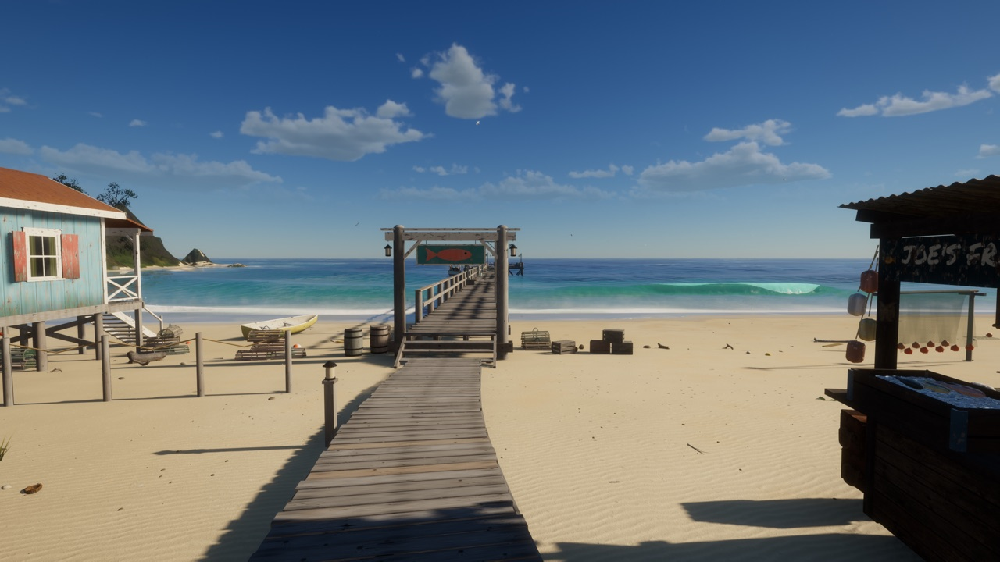

一座海岛钓鱼游戏
驾船出海，在礁区与深水区下竿，赶在天黑前把渔获卖给乔。
按 R 取出钓竿。按住鼠标左键蓄力，松手抛出：按得越久抛得越远。
盯住浮标。先试探几下，然后被拖入水中：就在那一刻点击鼠标左键提竿刺鱼。
搏鱼时按住左键收线，但要把线的张力保持在绿色区间。鱼发力时要松手，否则线会断。
能钓到什么取决于你下竿的位置：浅滩、礁区、断崖外的深水区，以及一天中的时辰。
栈桥边鱼摊的乔会收购你的渔获。鱼越重越值钱，所以尽量把大鱼带回来。
船屋旁的玛尔塔出售升级件：更结实的鱼线、更快的卷线器、更大的鱼舱、更多燃油和探鱼器。
在船边按 E 上船，在舵位按一次掌舵，再按一次即可离开舵位在甲板上走动。
按 I 打开冷藏箱和鱼类图鉴。玛尔塔的甲板灯让你在天黑后也能钓鱼。